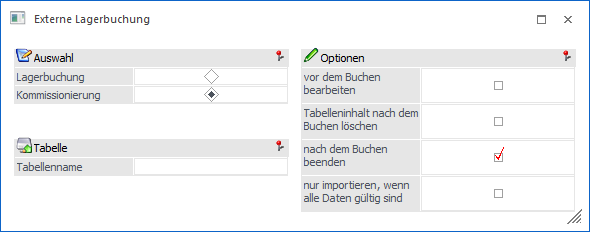
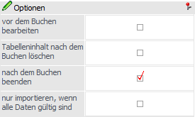
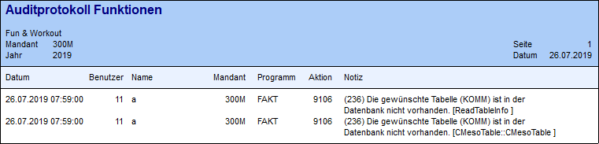
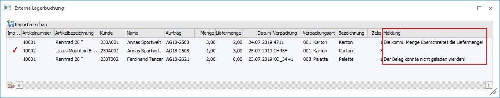

Durch Anwahl der Auswahl "Kommissionierung" können Kommissionierungsbuchungen auf Grundlage einer SQL-Tabelle in die WinLine FAKT importiert werden.

Folgende Eingabefelder stehen zur Verfügung:
Auswahl
Ø Lagerbuchung / Kommissionierung
Mit der Option "Kommissionierung" können Kommissionierungsbuchungen aus einer extra angelegten SQL-Tabelle importiert werden. Beim Import von Kommissionierungsbuchungen werden:
ü Kommissionierungsbuchungszeilen in das Artikeljournal geschrieben
ü die kumulierte kommissionierte Menge im Artikelstamm aktualisiert
ü die Verpackungen mit den kommissionierten Belegzeilen verknüpft
D.h. nach dem Import sind die Kommissionierungen so vorhanden, als ob sie im Fenster "Kommissionierung" eingegeben bzw. erfasst wären.
Hinweis
Der Import von Folgeverpackungen ist derzeit nicht unterstützt.
Tabelle

Ø Tabellenname
An dieser Stelle erfolgt die Eingabe des Tabellennamens, in welcher die Daten enthalten sind. Der Tabellenname darf max.30 Stellen lang sein und muss dem nachfolgend beschriebenen Aufbau entsprechen. Für eine automatische Anlage der Tabelle steht der Button "Tabelle erzeugen" zur Verfügung.
Achtung
Die SQL-Tabelle muss sich in der Datenbank des Mandanten befindet.
Tabellendefinition der Datentabelle
Damit externe Kommissionierungsdaten importiert werden können, muss die Importtabelle folgenden Aufbau haben:
|
Spaltenbezeichnung |
Datentyp (SQL-Server) |
Inhalt |
|
Mesokey |
INT IDENTITY (1, 1) |
Primärschlüssel |
|
C300 |
VARCHAR (30) |
Artikelnummer |
|
C301 |
FLOAT (nicht NULL) |
Menge |
|
C302 |
VARCHAR (20) |
Kundennummer |
|
C303 |
VARCHAR (20) |
Auftragsnummer |
|
C304 |
INT |
Zeilennummer |
|
C305 |
VARCHAR (50) |
Belegzeilenkey |
|
C306 |
DateTime |
Datum |
|
C307 |
VARCHAR (20) |
Verpackungsnummer |
|
Optional: |
|
|
|
C308 |
VARCHAR (50) bzw. INT |
Text: Bezeichnung der Verpackungsart oder |
Optionen

Ø vor dem Buchen bearbeiten
Wenn diese Option aktiviert ist, wird ein eigenes Fenster mit einer Importvorschau-Tabelle vor dem Buchen geöffnet, in welcher die zu importierenden Datensätze aufgelistet werden. Es können dann ggfs. fehlende Daten ergänzt werden bzw. ungültige Daten bearbeitet werden.
Ø Tabelleninhalt nach dem Buchen löschen
Wird diese Checkbox angewählt, so werden die Tabelleninhalte nach der Buchung gelöscht (die SQL-Tabelle selber bleibt erhalten).
Ø nach dem Buchen beenden
Wenn diese Option aktiviert ist, so wird das Fenster geschlossen, sobald die Buchungen durchgeführt wurden. Wenn die Option deaktiviert ist, bleibt das Fenster nach dem Datenimport offen.
Ø nur importieren, wenn alle Daten gültig sind
Wenn diese Option nicht aktiviert ist (Standardeinstellung), werden Datensätze mit ungültigen Artikelnummern oder mit Datümern, die außerhalb des Wirtschaftsjahres liegen, beim Import ignoriert und alle anderen Datensätze importiert. Wenn diese Option aktiviert ist, wird der gesamte Import abgebrochen, sobald ungültige Datensätze vorhanden sind.
Buttons

Ø Ok
Durch Drücken des Buttons "Ok" bzw. der Taste F5 wird die Übernahme der Kommissionierungsbuchungen gestartet. Nach Ende der Buchung wird ein Protokoll mit den importierten Daten ausgegeben.
Ø Ende
Bei Anwahl des Buttons "Ende" bzw. der Taste ESC wird das Fenster geschlossen und kein Import durchgeführt.
Ø Tabelle erzeugen
Wenn dieser Button angeklickt wird, dann wird überprüft, ob die Tabelle in der Mandantendatenbank bereits vorhanden ist. Ist das nicht der Fall, wird die Tabelle angelegt (vorher erfolgt eine Rückfrage, ob das tatsächlich gewünscht ist). Wurde die Tabelle erfolgreich angelegt, wird dies mit einer entsprechenden Meldung bestätigt. Ist die Tabelle bereits vorhanden, wird ebenfalls eine entsprechende Meldung ausgegeben.
Hinweis
Wenn der Button angeklickt wird und die Tabelle ist noch nicht vorhanden, werden auch 2 Fehlermeldungen in das Auditprotokoll-Funktionen geschrieben (Ampel schaltet auf Gelb):

Diese Meldung ist als Hinweis zu bewerten und der Normalfall, weil das Programm versucht auf die Tabelle zuzugreifen, diese aber nicht vorhanden ist.
Ø Vorlage erzeugen
Wenn eine Lagertabelle vorhanden ist, so kann aus dieser eine Vorlage des Typs "Lagerbuchung" erzeugt werden. Hierfür wird bei Anwahl des Buttons "Vorlage erzeugen" der Aufbau der Tabelle analysiert und die Vorlage entsprechend kreiert. Dadurch ist ein direkter Umstieg auf den Menüpunkt Lagerbuchungs-EXIM möglich.
Ø Prüfen
Im Importvorschau-Fenster (siehe Option "vor dem Buchen bearbeiten") können die aufgelisteten Datensätze mit dem Button "Prüfen" überprüft werden. Je nachdem, ob ein Datensatz in Ordnung ist oder nicht, wird eine entsprechende Meldung in der Spalte rechts in der Tabelle ausgegeben.

Es stehen Matchcodes für Artikelnummer, Kundennummer, Auftrag und Zeilennummer für die Suche in jeder Zeile in der Tabelle zur Verfügung. Die Eingabe wird erst beim Drücken des Buttons "Prüfen" erneut geprüft.
Hinweis 1
Es können Zeilen aus der Tabellen mit dem Entfernen-Button entfernt werden. Ein Hinzufügen von neue Zeilen ist nicht möglich.
Hinweis 2
Aufträge dürfen während des Imports von Kommissionierungen nicht in der Belegerfassung oder der Kommissionierung bearbeitet werden, sonst wird eine Fehlermeldung mit Abbruch-Funktion während des Imports ausgegeben.
Hinweis
Wenn die Spalte C404 (Datum) bei einem zu importierenden Datensatz leer ist, wird das aktuelle Tagesdatum für die Lagerbuchung automatisch ohne weitere Meldung herangezogen.